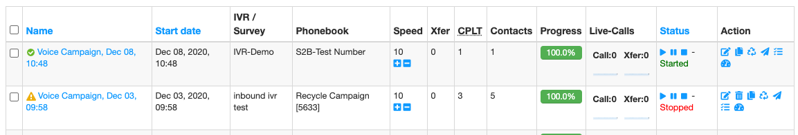
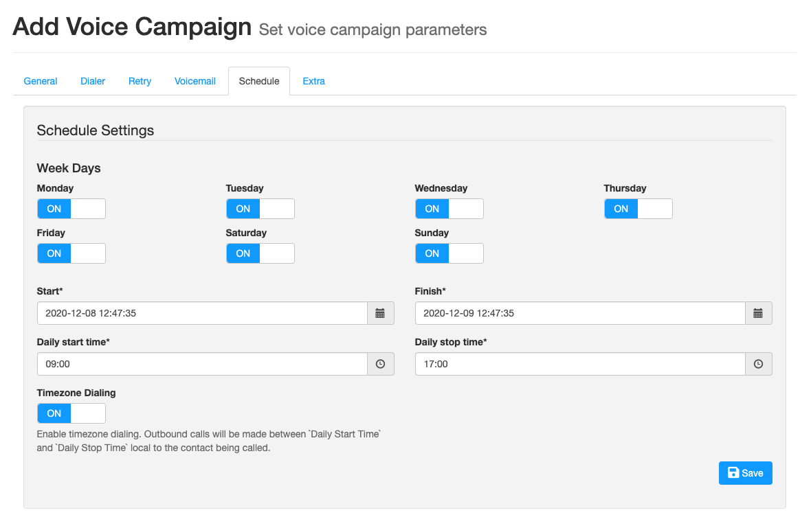
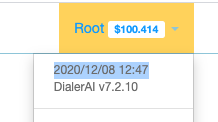

Customer FAQ¶
This is a short list of common errors and mistakes and the cure.
Campaign won’t start¶
Check you have a green tick next to the campaign. Orange triangle means the campaign is not in schedule. Edit the schedule to be in date.
See picture below of the first campaign in schedule and the second out of schedule.
I’ve Edited the Survey, but Changes Aren’t Applied to my Running Campaign¶
If you edit a survey, then you have to create a new campaign from scratch.
Do not duplicate an existing campaign, as this will copy the survey as it was in the campaign you duplicated from.
You can make changes the the recorded audio, text to speech script and transfer numbers while a campaign is running.
I’ve started the campaign, but it’s not made any calls.¶
After checking the CDR to confirm calls have not been made, Check:
- your survey has sections in it
- your phonebook has contacts
- it’s in schedule to run
- there are numbers in the approprate timezone to call
- if you are using a queue, confirm there are agents logged-in and available in your queue
I Want to Call my Contacts at Sociable Times Across Multiple Time Zones.¶
For example, you are based in New York on Eastern Standard Time (GMT-5)
The Start and Finish times are the times that the Campaign will run, provided you have started the campaign. You should set these to the rough duration of the campaign. By default they are set from “NOW” to 24 hours hence.
If you are calling the west coast, but still want calls to stop at 5PM EST, then you set the Finish time to today at 17:00.
The Daily Start Time, and Daily Finish times are the times before which and after which no contact will be called according to their local timezone, assuming you have Timezone dialling switched on. So if you have Start set to 9AM, calls won’t be made on the West Coast until it’s 9AM PST (their time).
If Timezone Dialling is switched off, then start and stop will be in EST, and West Coast contacts may get some really early calls.
You can check the current date and time on The Dialer under the user menu:-
If the campaign stops dialling, but is still not complete, there may be some numbers queued for the West Coast and these will go out when the time on the West Coast is after the Daily Start Time.